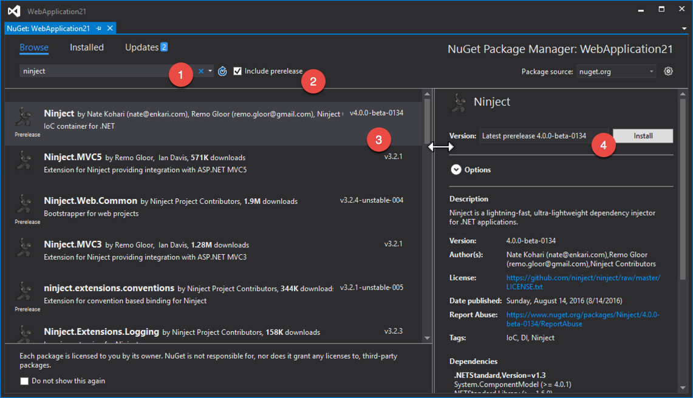
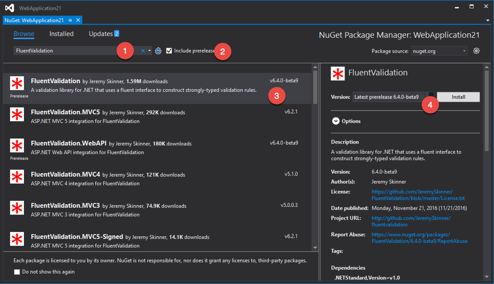
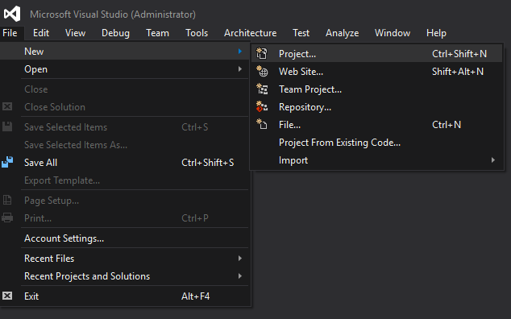
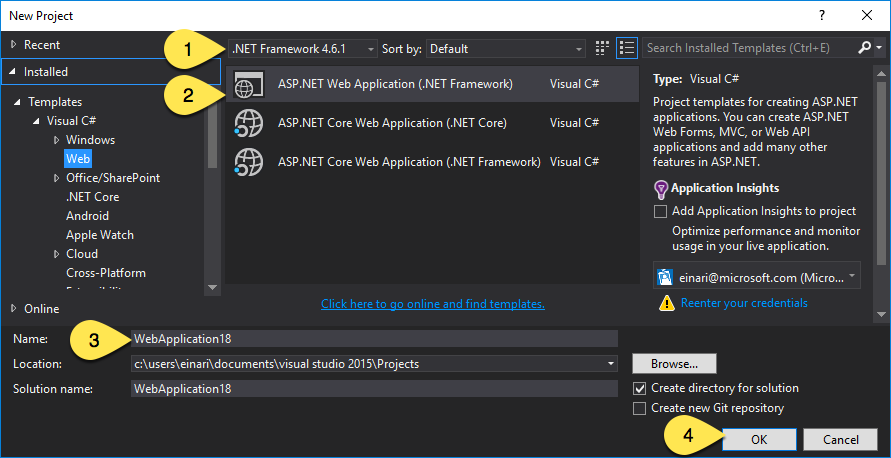
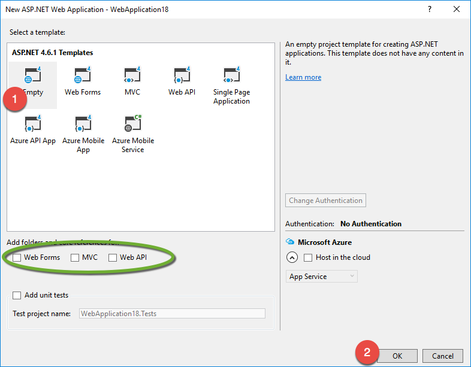
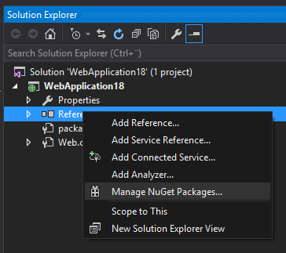
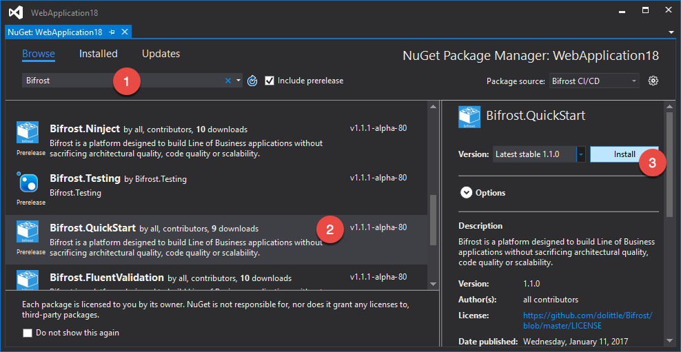
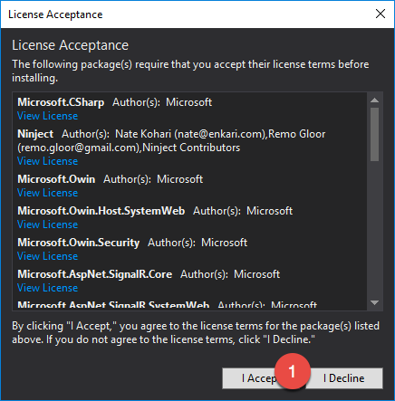
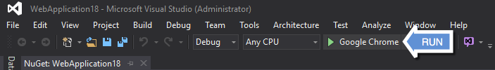
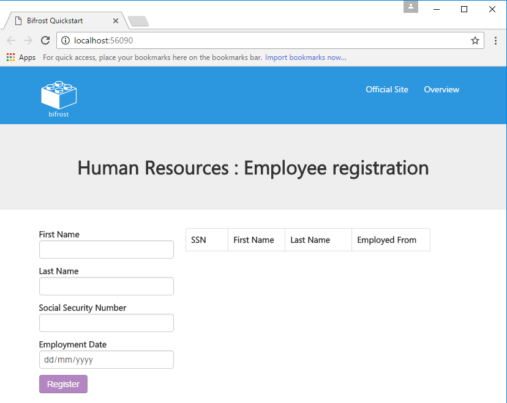

QuickStart
The quickstart is a NuGet package that sets you with a sample building on Bifrost. With the quickstart you get a Web based project that showcases Bifrost in an end-to-end scenario.
Note
Bifrost is currently dependending on pre-release versions of some of its dependencies (Ninject & FluentValidation) Due to Bifrost being marked as a release package, NuGet inside Visual Studio will complain and not install correctly. This experience is not the same using the dotnet CLI and project.json.
In order for you to get things running, you need to explicitly install the FluentValidation and Ninject parts before the quickstart package.

Or through the package manager console:
PM> Install-Package Ninject -version 4.0.0-beta-0134

Or through the package manager console:
PM> Install-Package FluentValidation -version 6.4.0-beta-9
Step by Step
Note
The quickstart has only been tested with Visual Studio 2015, it might work with Visual Studio for Mac as well. For Visual Studio Code and using .NET Core and project.json - it will restore all packages and you get to compile and run. But all the artifacts making up the sample is not put into the project folder. This tutorial focuses on the Visual Studio 2015 experience.
Start a new project:
Select .NET Framework 4.6.1 and ASP.NET Web Application, give it a name and click OK:
Select the Empty template:
Manage the NuGet packages for the project:
Browse / Search for Bifrost and find the QuickStart package and then click Install:
During installation it will ask you accept licenses, accept these:
You're now ready to run:
You should now see the following result:

Whats in the package
The package consists of configuration code and a sample running through the end to end of Bifrost.
Configurator
The Configurator.cs file is the entrypoint that Bifrost is looking for to configure it all.
You can read more about how you can configure Bifrost here.
ContainerCreator
The ContainerCreator.cs file is where the IoC container is configured.
Bifrost is heavily relying on dependency inversion. And has
been built from the ground up to rely on something providing these dependencies.
Index
The index.html is the starting point of the application. Notice the following line:
<div data-navigation-frame="home:HumanResources/Employees/index"></div>
It represents a navigation frame, explained in detail here.
You can find the home view in which it is referring to in the HumanResources/Employeesfolder.
The viewModel for the view is automatically hooked up by convention. Read more about how views work here.
Packages
QuickStart depends on other Bifrost packages to get started. It has taken a few decisions for you and is also configured in the simplest way that could possibly work.
The following packages has been pulled in:
| Package | Purpose |
|---|---|
| Bifrost | The core of Bifrost |
| Bifrost.JSON | JSON Serializer used throughout - utilizing NewtonSoft.JSON |
| Bifrost.Ninject | Implementation for Ninject - IoC container |
| Bifrost.FluentValidation | Implementation for validation using FluentValidation |
| Bifrost.Web | The Web part - including the Bifrost JavaScript SPA framework |